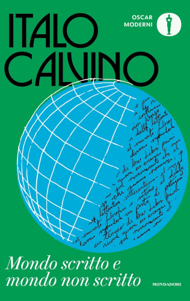

Come sono stati ridisegnati i libri di Italo Calvino
Centenario
In vista del centesimo anniversario della nascita di Italo Calvino, che cade il 15 ottobre, Mondadori ha ripubblicato in una nuova edizione tutti i libri del grande scrittore italiano.
Le copertine da disegnare erano parecchie: 33. Mondadori ha cominciato a organizzarsi per tempo e un anno e mezzo fa ha chiesto a quattro designer di copertine stranieri di fare una proposta grafica per la uniform edition.
A vincere la gara è stato l’irlandese Jack Smyth, un grafico che negli ultimi anni è stato molto apprezzato nell’editoria internazionale.

Richieste ai grafici
La richiesta iniziale di Mondadori ai quattro grafici coinvolti nella gara era una proposta per le copertine di tre libri: “Il barone rampante”, “Il sentiero dei nidi di ragno” e “Lezioni americane”.
Ai grafici era stato chiesto di pensare copertine innovative ed eleganti che fossero «narrative, calde, non concettuali», che «parlassero anche a un pubblico giovane» e che «trattassero Italo Calvino come un brand riconoscibile».
Gli unici paletti imposti erano la richiesta di non usare immagini esistenti per illustrare le copertine, in modo da differenziarle dalle precedenti edizioni di Mondadori, e il rispetto delle posizioni dei marchi della casa editrice previsti dalla struttura della collana.
Grafico e progettazione
Il primo “ostacolo per Smyth fu quello di dover lavorare attorno a due marchi, non essendo abituato a farlo, ma questo aspetto del lavoro ha contribuito ad alimentare l’interesse di Smyth perché «le restrizioni sono un’occasione per pensare a nuove soluzioni».
Sebbene le copertine richieste per la gara fossero tre, Smyth ne ha presentate sette, perché voleva essere sicuro che lo stile generale del progetto andasse bene per tutti i libri di Calvino.
Il primo carattere per il nome di Calvino era più pesante, allora Smyth ha proposto un font più sottile per il nome di Calvino, il “Busorama” di Tom Carnase, mentre per il titolo ha proposto il “Brunel Deck” di Commercial Type. Per quanto riguarda i colori sono stati scelti colori accesi.